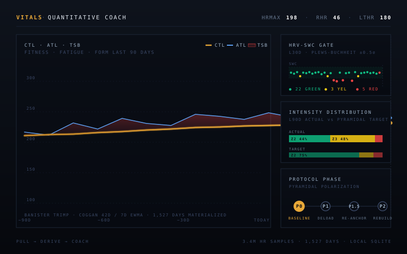
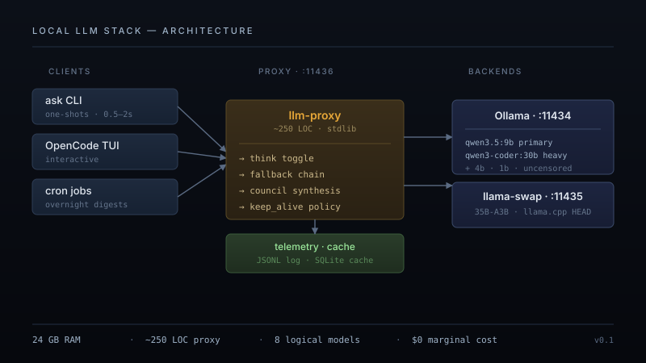

I build production systems alone.
By day: payments and fraud at a fintech. By night: a live trading bot, an AI assistant in my Meta glasses, a RAG over 11 years of my own messages.

Hello, I'm Gabe.
I'm a product manager in payments and fraud — ten years across underwriting, risk decisioning, funds availability, and the systems that decide whether transactions clear. I work at fintech companies of varying scale.
Outside the day job I build things end-to-end, by myself. The Kalshi bot below is 150K+ lines of Python running live on a VPS I manage. The personal knowledge base reads my own messages and answers questions about them. The Meta glasses see what I see. I lean heavily on AI coding tools — I think the most valuable engineers right now are the ones who use them to ship production systems alone, and that's the craft I'm trying to sharpen.
Selected Work
Live products and personal builds. Each card links to a deeper writeup.

Kalshi Prediction Market Bot
Automated trading system for CFTC-regulated event contracts. EGARCH volatility model, Kelly-sized positions, calibrated probabilities — running live with real capital.

Vitals — quantitative AI coach on my own data
A personal health data layer: Oura, Renpho, and a decade of message behavioral signals in one local SQLite. A model-agnostic persona contract turns any LLM — Claude, GPT, Gemini, or a local 9B — into a coach that has to query before it speaks.

VisionClaw — JARVIS in my glasses
Real-time AI assistant on my Oakley Meta HSTN glasses. Streams what I see and hear to Gemini Live, which talks back and can take actions on my behalf. Built on the open-source VisionClaw + Meta Wearables DAT SDK.

Personal Knowledge Base
A RAG over 11 years of my own iMessages, WhatsApp, and email — 168,000 messages, queryable in plain English. Then a second pass that distills it all into a written portrait. 100% local if you want it.

Local LLM Stack
A cheap inference tier on a 24 GB MacBook — stdlib proxy, fallback chains, prompt cache, JSONL telemetry. The tier below Claude, not a replacement for it. Built so the mechanical 60% of LLM work costs me nothing.
Builder first. Consultant when it fits.
I take a few engagements a quarter when the problem's interesting. Here's where I help most.
AI-accelerated shipping
Your team has ideas but ships slowly. I help integrate AI coding tools into your dev cycle so you go from prototype to production in days, not months. Works best for startups and internal-tools teams that need velocity.
Fintech systems
Ten years across payments, fraud, and trading — production risk-decisioning at a proptech payments company, fraud systems in fintech, and a live Kalshi bot running solo. I can advise on product decisions where payments meet ML, or get hands-on with risk and fraud work.
Stuck problems
Sometimes you don't need a team — you need someone to read the code, understand the constraint, and propose a fix. I'll spend a few hours, write it up, give you a path. No retainer.
Experience & Education
My professional history lives on LinkedIn — full timeline across payments, fraud, and product.
View on LinkedIn